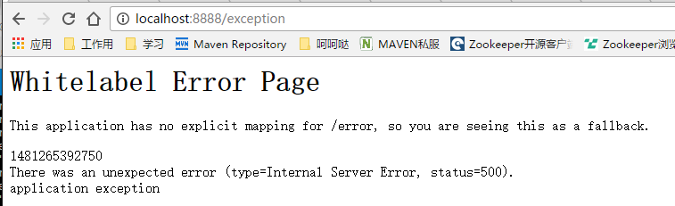
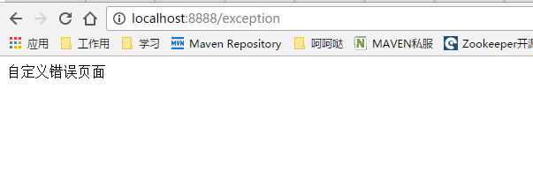
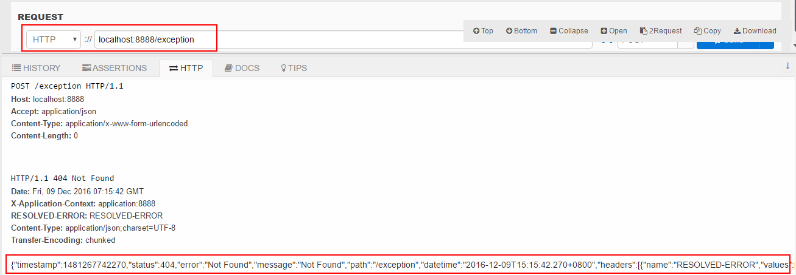
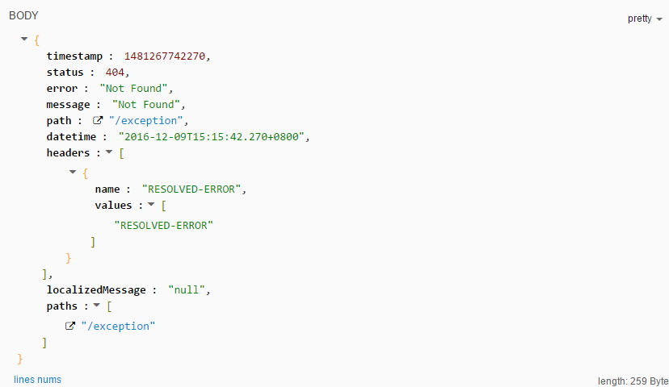

errorHandle 全局统一异常处理
使用手册
1 引入pom
...
<properties>
...
<java.version>1.8</java.version>
<spring-boot.version>1.4.1.RELEASE</spring-boot.version>
<oss-release.version>1.0.6-SNAPSHOT</oss-release.version>
</properties>
...
<!-- oss 依赖 -->
<dependencyManagement>
<dependencies>
<dependency>
<groupId>cn.home1</groupId>
<artifactId>oss-release-spring-boot-${spring-boot.version}</artifactId>
<version>${oss-release.version}</version>
<type>pom</type>
<scope>import</scope>
</dependency>
</dependencies>
</dependencyManagement>
<dependecies>
...
<!--errorhandle-->
<dependency>
<groupId>cn.home1.oss.lib</groupId>
<artifactId>oss-lib-errorhandle-spring-boot-${spring-boot.version}</artifactId>
</dependency>
...
</dependecies>
2 配置 application.yml
server:
port: 8080
error:
includeStacktrace: ALWAYS #统一异常处理是否启用调用栈跟踪 ALWAYS 总是启用 ,NEVER 不启用 ,ON_TRACE_PARAM 当请求包含trace参数名的时候跟踪
app: # oss app配置
type: MIXED # app类型 MIXED,RESTFUL,TEMPLATE 三种
error:
searchStrategy: HIERARCHY_FIRST # ORDER_FIRST, HIERARCHY_FIRST 自定义异常模板信息替换策略 默认HIERARCHY_FIRST
handlerEnabled: false #统一异常处理默认配置 若为true 则启用@ControllerAdvice方式处理异常
3 新建Application.java启动类
@RestController
@SpringBootApplication
public class Application {
@RequestMapping("/hi")
public String sayHi() {
return "HI Hello World!";
}
public static void main(String[] args) {
SpringApplication.run(Application.class, args);
}
}
4 现在即可使用了，运行Application的main方法
访问一个不存在的页面 http://127.0.0.1:8080:8080/exception 会出现下图所示 
5 自定义错误页面
在 src/main/resources/templates 目录下添加 error.html ，结果如图 
6 使用http请求工具模拟访问restful请求结果示例（header中accept:application/json）

返回json结果具体如下图

7 简单层面来说，恭喜你 oss-lib-errorhandle引入成功了!
8 更为详细的细节介绍，以及使用请查看文档详细介绍文档